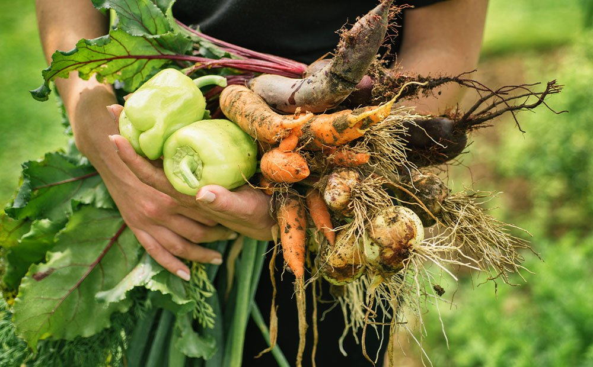

The vegetable farming process starts with soil preparation, followed by planting seeds or seedlings. Regular irrigation, weeding, and pest control ensure healthy growth. Farmers monitor the crops and apply fertilizers as needed. Once the vegetables mature, they are harvested manually or with machines, then cleaned, sorted, and packed. Proper storage and transportation help maintain freshness before reaching markets or consumers.
Our company follows a systematic approach to harvesting vegetables to ensure efficiency, quality, and minimal waste. The process begins with careful monitoring of crop maturity, using factors like size, color, and ripeness to determine the right time for harvesting. Depending on the type of vegetable, harvesting is done manually by skilled workers or mechanically using specialized machines. Leafy greens and delicate crops are often hand-picked to prevent damage, while root vegetables and large-scale crops like potatoes and carrots are harvested using automated equipment. After harvesting, vegetables are transported to processing units where they are cleaned, sorted, and graded based on steady supply of fresh, high-quality vegetables."